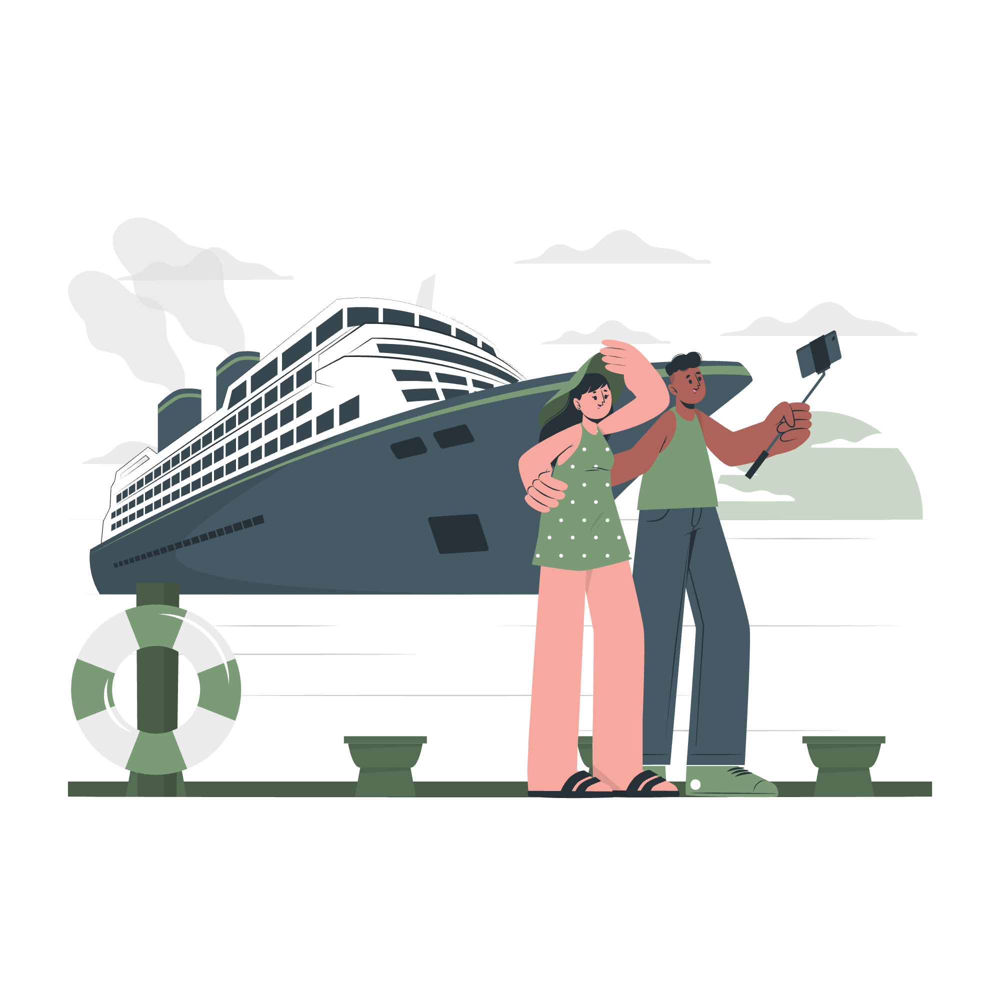

Sentinel (ISTJ • ISFJ • ESTJ • ESFJ)
Comfortable • Organized • Reliable • Relaxing
Sentinels travel to recharge, create memories, and enjoy stability away from daily routines. They appreciate destinations that are calm, welcoming, and easy to explore while still offering culture, scenery, and quality experiences.
- enjoy calm and comfortable travel
- prefer relaxing and organized trips
- love peaceful scenery and cultural places
- enjoy family-friendly destinations
- travel to recharge and unwind